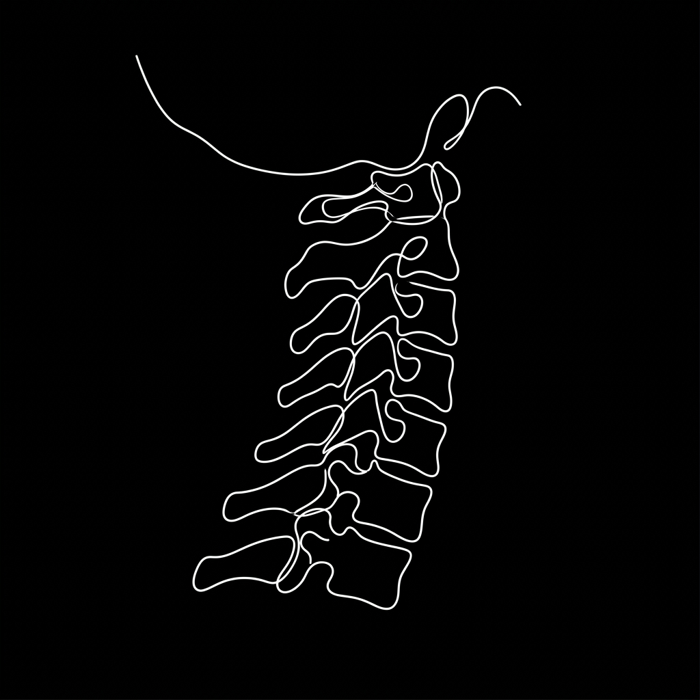

Treatment — Injection Therapy
침습을 넘어선,
정교함의 새로운 기준
삼성365의원의 미세바늘 주사치료는 단순한 통증 억제를 넘어섭니다.
0.3mm의 정밀 접근으로 신경 유착을 해소하고 신체 본연의 회복력을 복원합니다.
Classification
통증의 겉면이 아닌
신경의 틈새를 봅니다
약물에만 의존하는 일반 주사와 달리, 미세바늘 자체가 유착 조직을 물리적으로 직접 박리하여 숨통을 틔워줍니다.
물리적 신경 박리
바늘 자체가 치료 도구가 되어 신경을 옭아맨 유착을 직접 풀어줍니다.
조직 손상 최소화
0.3mm 미세바늘을 사용하여 시술 시 통증이 거의 없고 조직 손상을 극소화합니다.

0.3mm
Ultra Precision
Process
정밀 진단 시스템
영상 의학 분석
X-ray 및 초음파를 통해 척추 정렬과 유착 상태를 정밀 파악합니다.
이학적 검사
숙련된 전문의의 감각으로 정확한 신경 포착 지점을 찾아냅니다.
맞춤 계획 설계
개개인의 증상에 맞춰 3R 테라피의 단계를 최적화합니다.
Mechanism
3R Therapy Philosophy
Release
심부 근육과 신경 주위의 유착을 미세바늘로 직접 정밀하게 풀어냅니다.
Reinforcement
약해진 조직에 재생 반응을 유도하여 신체 구조를 다시 견고하게 재건합니다.
Recovery
예민해진 신경계를 안정시키고 신체 기능을 본연의 상태로 회복시킵니다.
Journey
치료 과정 가이드
심층 상담
전문의와 직접 증상을 상담합니다.
정밀 검사
초음파 등으로 부위를 확인합니다.
타겟 시술
미세바늘로 정교하게 시술합니다.
일상 복귀
짧은 휴식 후 일상으로 돌아갑니다.
통증의 악순환,
지금 멈출 수 있습니다.
재발이 잦아 근본 해결이 필요하신 분
스테로이드 부작용이 걱정되시는 분